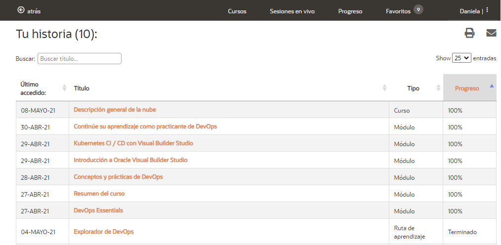
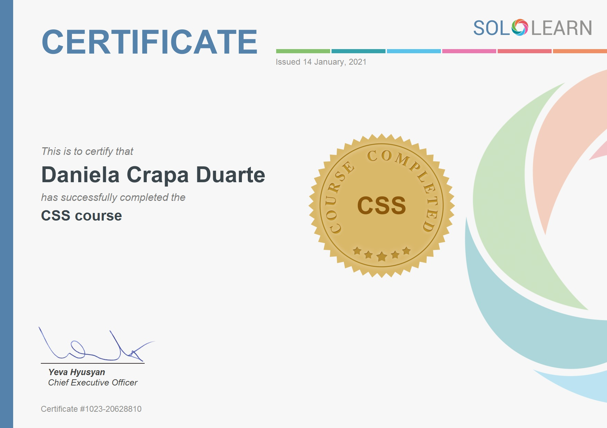
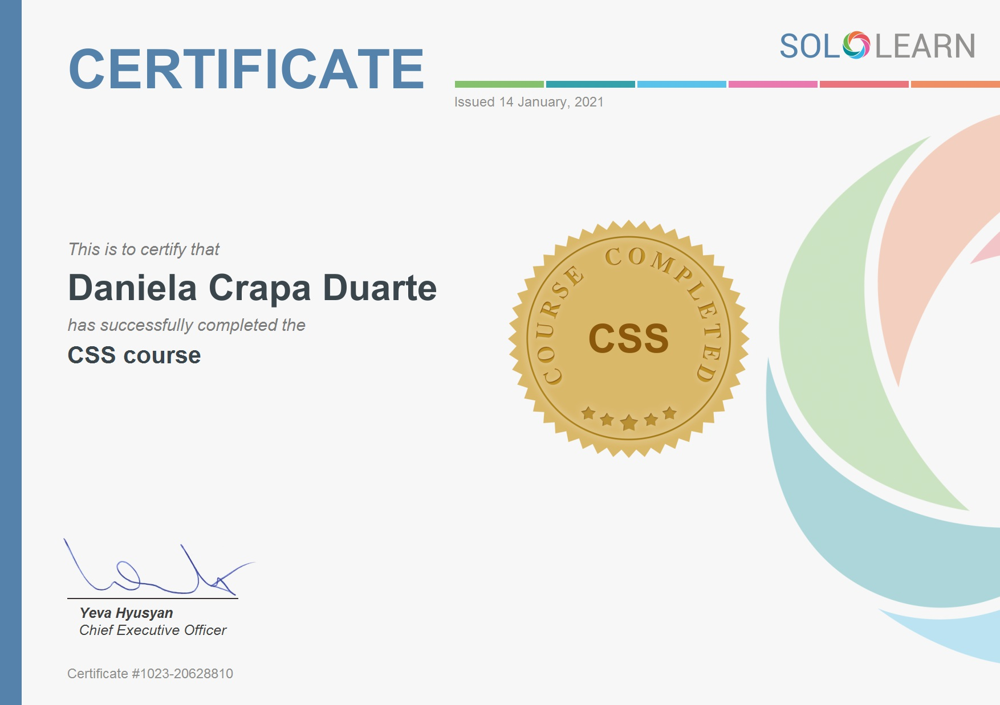

Sobre Mi
Mi nombre es Daniela, y soy un proyecto de programadora. Ademas de estudiar para ello, me desenvuelvo como Team Leader de un equipo que desarrolla software para una Startup.
El área en la cual me desempeño junto con mi team, esta a cargo del desarrollo de una app, por lo cual considero que dicha area es en la que me gustaria desempeñarme actualmente. Aunque me encuentro siempre dispuesta a nuevos desafios, ya que apenas soy una trainee.
Soy proactiva y autodidacta, continuamente me interesa actualizar mis conocimientos tanto de manera individual como en la actividad cotidiana con el equipo en el que trabajo.
Tambien realizo de manera mas formal cursos en distintas
plataformas e instituciones, como lo es, por ejemplo, el polotic de misiones. http://cursos.polotic.misiones.gob.ar
Mi zona de confort es trabajando en equipo y a traves de metodologias agiles, como Scrum, por ejemplo.
Actualmente estos son los cursos que realizo en polotic.misiones.gob.ar:
En Oracle University:

Otros cursos:
 
